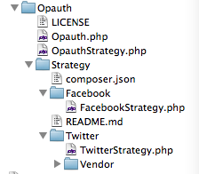
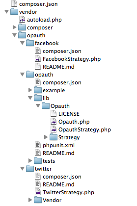

Composerによる
ライブラリの管理と
オートローダーの使用
PHPの開発効率が飛躍的に上がる!
Composerって何？
( ﾟдﾟ) ?
Composer is a tool for dependency management in PHP. It allows you to declare the dependent libraries your project needs and it will install them in your project for you.
Composer is not a package manager. Yes, it deals with "packages" or libraries, but it manages them on a per-project basis, installing them in a directory (e.g. vendor) inside your project. By default it will never install anything globally. Thus, it is a dependency manager.
http://getcomposer.org/doc/00-intro.md
パッケージマネージャじゃないって書いてるけど・・・
Dependency Manager??
composer.jsonを見てみる
monolog v1.4.1
https://github.com/Seldaek/monolog
{
"name": "monolog/monolog",
"description": "Sends your logs to files, sockets, inboxes, databases and various web services",
"keywords": ["log", "logging", "psr-3"],
"homepage": "http://github.com/Seldaek/monolog",
"type": "library",
"license": "MIT",
"authors": [
{
"name": "Jordi Boggiano",
"email": "j.boggiano@seld.be",
"homepage": "http://seld.be"
}
],
"require": {
"php": ">=5.3.0",
"psr/log": "~1.0"
},
"require-dev": {
"mlehner/gelf-php": "1.0.*",
"raven/raven": "0.3.*",
"doctrine/couchdb": "dev-master"
},
"suggest": {
"mlehner/gelf-php": "Allow sending log messages to a GrayLog2 server",
"raven/raven": "Allow sending log messages to a Sentry server",
"doctrine/couchdb": "Allow sending log messages to a CouchDB server",
"ext-amqp": "Allow sending log messages to an AMQP server (1.0+ required)",
"ext-mongo": "Allow sending log messages to a MongoDB server"
},
"autoload": {
"psr-0": {"Monolog": "src/"}
},
"extra": {
"branch-alias": {
"dev-master": "1.4.x-dev"
}
}
}
"require"と"require-dev"に注目
"php": ">=5.3.0","psr/log": "~1.0""mlehner/gelf-php": "1.0.*""doctrine/couchdb": "dev-master"( ﾟдﾟ) ?
Semver
Semantic Versioning
http://semver.org/Author

バージョンナンバーの付け方のコンベンション
v2.5.12
Major.Minor.Patch
-
Majorバージョンが2になってから、5回マイナーバージョンアップした。 マイナーバージョンアップは、後方互換性がある(Backward Compatibility)。 ただし、Majorバージョンが０の間は例外。
-
Minorバージョンが５になってから、12回パッチが当てられた
-
Majorバージョンアップは、後方互換がない大きなAPI変更があることがある。
-
詳しくは、原文を確認 http://semver.org/
パッケージマネージャをつかうと、どう便利か
例えば、Opauthを使ったとすると・・・
Sterategyディレクトリの中に、 それぞれの認証プロバイダのライブラリをダウンロードして、置かなきゃいけない。
composerを使うと
composer.json
{
"require":{
"opauth/opauth": "*",
"opauth/facebook": "*",
"opauth/twitter": "*"
}
}あとは、以下のようにコマンドするだけ
$ composer install
vendorディレクトリに勝手にダウンロードしてくれる
composer付属のautoloaderを使う
composer.json
{
"require": {
"monolog/monolog": "~1.4",
"respect/rest": "~0.5.1"
}
}
monologと、respect/restをインスコしたとして
require 'vendor/autoload.php';
$log = new Monolog\Logger();
$router = new Respect\Rest\Router();
require, require_once
include, include_once
書く必要なし！
Conditionalなrequire, includeも、オートローダーを使えば簡単
require 'vendor/autoload.php';
if (false) {
$log = new Monolog\Logger();
}
// Monolog\Loggerは読み込まれない
HybridAuthのメソッド内のrequire_once
https://github.com/hybridauth/hybridauth/blob/v2.0.10/hybridauth/Hybrid/Auth.php#L96-L112
autoloderを使っていないため、
モジュール管理が複雑化している
autoloader
spl_autoload_register
http://php.net/manual/en/function.spl-autoload-register.php
composer.json
{
"autoload": {
"psr-0": {
"Foo": "lib/"
}
}
}lib/Foo.php
class Foo { public $bar = 'foobar'; }index.php
require 'vendor/autoload.php';
$foo = new Foo();
echo $foo->bar;// foobar
Composerのautoloadには、３種類ある
{
"autoload": {
"psr-0": {},
"classmap": [],
"files": []
}
}- psr-0
- classmap
- files
PSR-0
https://github.com/php-fig/fig-standards/blob/master/accepted/PSR-0.mdcomposer.json
{
"autoload": {
"psr-0": {
"Utils": "lib/"
}
}
}lib/Utils/Foo.php
namespace Utils;
class Foo
{
public function bar()
{
echo __CLASS__ . __FUNCTION__;
}
}index.php
require 'vendor/autoload.php';
$foo = new Utils\Foo();
$foo->bar();//Utils\Foobar
さっきのFoo.phpとまとめてみる
composer.json
{
"autoload: {
"psr-0": {
"Foo": "lib/",
"Utils: "lib/"
}
}
}もしくは、
{
"autoload": {
"psr-0": {
"": "lib/"
}
}
}index.php
require 'vendor/autoload.php';
$foo = new Foo();
$foo2 = new Utils\Foo();
aliasつかう
require 'vendor/autoload.php';
use Respect\Validation\Validator as v;
use Utils\Validators\UserValidator;
$ok = v::numeric()->validate(100);
$ok = UserValidator::validate(array( 'name' => 'hoge' ));classmap
PSR-0 ?
( ﾟдﾟ)､ﾍﾟｯ
PSR-0スタンダードに沿わないクラス・ファイル名の命名をしていたら・・・
lib/FooBar.php
class Foo
{
public $foo = 'foo';
}
class Bar
{
public $bar = 'bar';
}composer.json
{
"autoload": {
"psr-0": {
"": "lib/"
}
}
}index.php
require 'vendor/autoload.php';
// $foo = new Foo(); // Fatal Error
// $bar = new Bar(); // Fatal Error
// $foobar = new Foobar(); // Fatal Errorclassmapを使う
composer.json
{
"autoload": {
"classmap": ["lib/FooBar.php"]
}
}index.php
require 'vendor/autoload.php';
$foo = new Foo();
echo $foo->foo; // foo
$bar = new Bar();
echo $bar->bar; // baridiorm
classmapを使っているライブラリもある
https://github.com/j4mie/idiorm/blob/v1.3.0/composer.json#L39-L41composer.json
{
"require": {
"j4mie/idiorm": "1.3.0"
}
}vendor/composer/autoload_classmap.php
// autoload_classmap.php generated by Composer
$vendorDir = dirname(__DIR__);
$baseDir = dirname($vendorDir);
return array(
'IdiormResultSet' => $baseDir . '/vendor/j4mie/idiorm/idiorm.php',
'IdiormString' => $baseDir . '/vendor/j4mie/idiorm/idiorm.php',
'IdiormStringException' => $baseDir . '/vendor/j4mie/idiorm/idiorm.php',
'ORM' => $baseDir . '/vendor/j4mie/idiorm/idiorm.php',
);files
vendor/autoload.phpを読む時requireしてくれる
アプリケーション全体にわたって使われるグローバルな変数・関数に使うと便利
composer.json 公式サイトの例
{
"autoload": {
"files": ["src/MyLibrary/functions.php"]
}
}composer.json
{
"autoload": {
"files": ["lib/MySQLSessionHandler.php"]
}
}セッションハンドラーを 独自に実装している時とかもいいかも
詳しくは、Composer公式ページで確認
パッケージは、Packagistで検索
[追加]肝心のcomposerのインスコの方法とか、忘れてました。 m(_ _)m